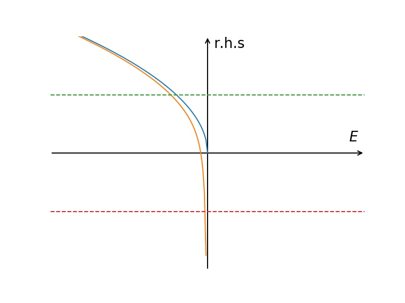

BCS Theory 课堂笔记整理 II
Table of Contents
1. Review
真空中的两体问题, 费米海上的两体问题, 都可以求解, 它们的方程略有不同.
\begin{align} \frac{m}{4\pi \hbar^2 a_s} = \left\{ \begin{array}{cc} \frac{1}{V}\left( \sum_{\vec{k}}\frac{1}{E - 2\epsilon_{\vec{k}}} + \sum_{\vec{k}}\frac{1}{2\epsilon_{\vec{k}}}\right) & \mathrm{vacuum}\\ \frac{1}{V}\left( \sum_{|\vec{k}|> k_{\mathrm{F}}}\frac{1}{E - 2(\epsilon_{\vec{k}} - \mu)} + \sum_{\vec{k}}\frac{1}{2\epsilon_{\vec{k}}}\right) & \mathrm{Fermi sea} \end{array} \right. \end{align}右边求和之后是关于能量的函数, 把能量的函数画出来. 特别关心的是能量为负的一边  有费米海的两体问题, 求和变成了所有对于 \(|\vec{k}| > k_{\mathrm{F}}\) 的求和, 因为 这时候已经有费米子把费米海填满了. 在 \(E\) 很负的地方, 两条线是逐渐靠近的. 它们的 区别是在 \(E=0\) 时, 一个函数是 \(0\) (一加一减抵消掉了), 还有一个向 \(-\infty\) 发散. 解 这个方程, 画一条横线( \(\propto \frac{1}{a_s}\) ) .
从这个方程的结构里边可以看到, 如果 要去研究这个问题的话, 散射长度是一个最关键的参数. 最好的标定这个参数效果的不是它 自己, 而是它的倒数, 也就是 \(1/a_s\) . 但它不是无量纲的东西, 在多体系统中, 一般要 乘上一个动量的单位 , 在多体系统中, 最自然的单位就是费米动量, 所以就用 \(-\frac{1}{k_{\mathrm{F}}a_s}\) (习惯上加个负号) 来标定.
2. BEC 侧
如果 \(\frac{1}{k_{\mathrm{F}}a_s} \gg 1\) , 散射长度自己是个非常小的正数. 求解的时 候, 线就在很高的地方. 这时两个交点都在 \(E\) 是负的, 并且很大的地方, 说明这两个两 体问题的解起来越靠近, 靠近到 \(\propto\sqrt{-E}\) , 方程的解是
\begin{align} E = - \frac{\hbar^2}{m a_s} \end{align}这个区域, 等价于 \(1/a_s \gg k_{\mathrm{F}}\) , \(d \tilde{} 1/k_{\mathrm{F}} \gg a_s\) , 这代表 着 2-body bound state energy 的绝对值要远大于费米能, 也就是
\begin{align} |E| \gg \frac{\hbar^2k_{\mathrm{F}}^2}{2m} = E_{\mathrm{F}} \end{align}另外一个角度来讲, 这样的 energy 对应的 2-body bound state 的大小是 \(a_s\) 那么大. binding energy 越大, \(a_s\) 越小. bound state size 越小, 束缚越强. bound state size 远小于粒子间间距. 双原子分子形成 BEC
3. BCS 侧
另外一个区域, \(\frac{1}{k_{\mathrm{F}}a_s} \gg 1\) , 线在很负的地方, 在下面. 在这个 区域中, 真空中的两体问题是没有解的. 没错, 如果散射长度是负的, 真空中的两体问题没 有所谓的 shallow bound state . 但是, 在多体系统中, 会给出一个 \(E < 0\) 的解, 这告诉 我们 Fermi surface 是不稳定的. 因为在费米面上放两个 particle , 激发能是负的. 所 以要 reconstruct 一个 ground state. 但是 2-body 的解给我们一些启发
- 这个不稳定, 不是一个单粒子的不稳定, 是一个 2-body 的不稳定性, 它应该跟两个费 米子的相互作用有关系
- 这个能量虽然是负的, 但是非常小, 这个贡献来自于 \(\mu\) 的贡献 (从方程中可以看出, 这个发散的贡献, 来自于费米面附近的贡献) , 所以这个 reconstruction 最主要的要 发生在 Fermi surface 附近.
这就是从 2-body 的解得到的 motivation . 因为这个 motivation, 要去重构一个 ground state, 这个 ground state 就是 BCS state
4. 费米面的空间反射对称性
这个 BCS state 从最原始的有相互作用的两分量费米气体出发
\begin{align} H = \sum_{\vec{k,\sigma}}(\epsilon_{\vec{k}} - \mu) c^{\dagger}_{\vec{k}\sigma}c_{\vec{k}\sigma} + \frac{g}{V}\sum_{\vec{k}, \vec{k}', \vec{q}} c^{\dagger}_{\vec{k}+\vec{q}/2\uparrow}c^{\dagger}_{-\vec{k}+\vec{q}/2\downarrow} c_{-\vec{k}' + \vec{q}/2\downarrow}c_{\vec{k}'+\vec{q}/2\uparrow} \end{align}有四费米子的相互作用. 第一件事情是取 \(\mathrm{q}=0\) . 所以散射过程中的一对费米子 的 center of mass momentum 就是 \(\mathrm{q}\) . 动量转移是 \(\vec{k} - \vec{k}'\) . 原则上 \(\vec{q}\) 可以随便取. 但是为什么通常在 BCS 理论中取 \(\vec{q} = 0\) , 这是什么道理?
因为大部分处理的问题中, 费米面有空间反射不变性 (球形是一个典型例子). 这保证了如 果 \(\vec{k}\) 在费米面上, \(-\vec{k}\) 一定也在费米面上. 保证了
\begin{align} \epsilon_{\vec{k}} = \epsilon_{-\vec{k}} \end{align}如果 \(\vec{q}\neq 0\) , 那么 \(\epsilon_{\vec{k}+\vec{q}/2}\) 和 \(\epsilon_{-\vec{k}+\vec{q}/2}\) 不一定相等. 相当于把两个粒子在动量空间上整体平衡一下, 一个态还在费米面上, 另一 个态已经不在费米面上了. 所以具有空间反射不变性的费米面保证了, 两个发生散射的粒子 同时在费米面上, 也就是只要 \(\vec{k}\) 在费米面上, \(-\vec{k}\) 一定在费米面上, 散射 之后也一定在费米面上.
这个 reconstruction , 量子态的重构发生在, Fermi surface 附 近, 要保证 \(\vec{k}\) 跟 \(-\vec{k}\) 都在费米面附近. 也有一些系统, 它发生的 pairing \(\vec{q} \neq 0\) 这些系统费米面的结构和现在讨论的不一样. 这些 \(\vec{q} \neq 0\) 的 pairing state 叫做 FFLO state, 但这些态是很奇怪的. 很多情况下, 它的 energy 是不稳定的, 除非 Fermi surface 特别奇怪.
所以第一件事, 就是取了 \(\vec{q} = 0\) 的 scattering , 这样做的原因与费米面的空间 反射对称性有关.
5. Pairing Symmetry
第二件事情就是, 一般讲来, 散射的系数是 \(V(\vec{k} - \vec{k}')\) , 就像一个矩阵一 样, 有两个 index . 一个 index 是 \(\vec{k}\) , 一个 index 是 \(\vec{k}'\) . 可以对这 个矩阵进行正交分解
\begin{align} V(\vec{k} - \vec{k}') = \sum_i \lambda_i f_{\vec{k}}^i f_{\vec{k}'}^i \end{align}这里相当于是做了对角化(特征分解) . 而且上式的结果已经默认 \(V(\vec{k} - \vec{k}')\) 是实对称的, 这符合物理. 从上式也可以体会特征分解的本质. 每个矩阵元都 包含不同的特征值的成分, 每个特征值对应的成分就是特征值对应的特征向量的的两个元素 的乘积, 就是每个特征向量的外积按特征值为权重做线性组合.
比如一个 \(2\times 2\) 的实对称的矩阵 \(\Sigma\) 可以对角化
\begin{align} U^T\Sigma U = \Lambda = \left( \begin{array}{cc} \lambda_a & \\ & \lambda_b \end{array} \right) \end{align}其中
\begin{align} U = \left( \begin{array}{cc} \vec{u}_a & \vec{u}_b \end{array}\right) = \left( \begin{array}{cc} C_{a1} & C_{b1}\\ C_{a2} & C_{b2} \end{array}\right) \end{align}如果分解成外积的形式
\begin{align} \Sigma = \sum_i \, \lambda_i \cdot\vec{u}_i \otimes \vec{u}^T_i \end{align}如果写成矩阵元的形式
\begin{align} \Sigma_{ij} = \sum_{kl} U_{ik} \lambda_k\delta_{kl} U_{jl} = \sum_k \lambda_k U_{ik} U_{jk} \end{align}具体写出来就是
\begin{align} \Sigma = U \Lambda U^T = \left( \begin{array}{cc} \lambda_aC_{a1}^2 + \lambda_bC_{b1}^2 & \lambda_a C_{a1} C_{a2} + \lambda_b C_{b1} C_{b2}\\ \lambda_aC_{a1}C_{a2} + \lambda_bC_{b1}C_{b2} & \lambda_a C_{a2}^2 + \lambda_b C_{b2}^2 \end{array}\right) \end{align}\(U_{ij}\) 下标表示第 \(j\) 个本征向量第 \(i\) 个元素. 很明显, 每个元素都是 \(\lambda_a\) 与 \(\lambda_b\) 的组合.
- \(\Sigma_{11}\) 是: \(\lambda_a\) 乘上第 \(a\) 个本征值的第 \(1\) 个元素与第 \(1\) 个元素, 加上 \(\lambda_b\) 乘上第 \(b\) 个本征值的第 \(1\) 个元素与第 \(1\) 个元素.
- \(\Sigma_{12}\) 是: \(\lambda_a\) 乘上第 \(a\) 个本征值的第 \(1\) 个元素与第 \(2\) 个元素, 加上 \(\lambda_b\) 乘上第 \(b\) 个本征值的第 \(1\) 个元素与第 \(2\) 个元素.
- \(\Sigma_{21}\) 是: \(\lambda_a\) 乘上第 \(a\) 个本征值的第 \(2\) 个元素与第 \(1\) 个元素, 加上 \(\lambda_b\) 乘上第 \(b\) 个本征值的第 \(2\) 个元素与第 \(1\) 个元素.
- …
还可以发现, 不同的特征值之间没有耦合. 这也合理, 因为它们是正交的.
如果有一个 \(\lambda_i\) 特别重要, 把它特别提出来(省略下标 \(i\) )
\begin{align} \lambda \sum_{\vec{k}, \vec{k}'} \, f_{\vec{k}} f_{\vec{k}'}\, \hat{c}^{\dagger}_{\vec{k}, \uparrow} \hat{c}^{\dagger}_{-\vec{k}, \downarrow} \hat{c}_{-\vec{k}', \downarrow} \hat{c}_{\vec{k}', \uparrow} \end{align}换一种记号
\begin{align} g \left( \sum_{\vec{k}} \, f_{\vec{k}} \hat{c}^{\dagger}_{\vec{k}, \uparrow} \hat{c}^{\dagger}_{-\vec{k}, \downarrow} \right) \left( \sum_{\vec{k}'} f_{\vec{k}'}\hat{c}_{-\vec{k}', \downarrow} \hat{c}_{\vec{k}', \uparrow} \right) \end{align}这是
\begin{align} g \hat{A}^{\dagger} \hat{A} = \Delta^{*}\hat{A} + \Delta\hat{A}^{\dagger} - \frac{\Delta^2}{g} \quad \mathrm{where} \quad \Delta = \langle g \hat{A} \rangle \end{align}的形式 做完平均场后
\begin{align} \Delta^{*} \sum_{\vec{k}} \, f_{\vec{k}} \hat{c}^{\dagger}_{\vec{k}, \uparrow} \hat{c}^{\dagger}_{-\vec{k}, \downarrow} + \Delta \sum_{\vec{k}'} f_{\vec{k}'}\hat{c}_{-\vec{k}', \downarrow} \hat{c}_{\vec{k}', \uparrow} \end{align}这个形式里面, 这个 \(f_{\vec{k}}\) 来源于相互作用的分波展开, 它是一个数, 来自于相 互作用的 Fourier 变换. 所以这时候把 \(\Delta\) 与 \(f_{\vec{k}}\) 合在一起
\begin{align} \Delta_{\vec{k}} \equiv \Delta^{*} f_{\vec{k}} \end{align}相当于, 这时候的 order parameter 有一个动量依赖, 这个动量依赖的形式来自于相互作 用分波展开. 这里的 \(f^i_{\vec{k}}\) 取哪一个, 相当于是看相互作用里面哪一个分波是最 重要的. 所以 \(f_{\vec{k}}\) 在动量空间有一定的对称性, 相当于分波展开, 如果 \(f_{\vec{k}}\) 是各向同性的, 就相当于 s 波. p-wave, d-wave 类似. 不同的 \(f_{\vec{k}}\) 的不同的对称性, 就决定了 pairing 的 order parameter 不同的对称性. 这个对称性叫作 pairing symmetry . define Cooper wave function 的时候, 就是形成 Cooper pair 的两个粒子相对运动波函数是 s 波还是 p 波的.
6. Reconstruction of Fermi Surface
对于一个 BCS 理论来讲, 有两件事情. 一个就是 pairing 的 center of masss momentum , 这里取了 \(\vec{q}0\) . 第二件事情就是 pairing symmetry , 相互作用的各个不同通道 里面, 取哪个通道做 pairing 的平均场. 这两件事是在做 mean field 之前, 先人为取定 的. 取哪个波, 相当于取了不同的项做平均场, 最后得到的 wave function, ground state 也不一样. 最后哪个 mean field 更正确, 就要比不同的 mean field 给出的 ground state energy 哪个更低.
这里讨论的是一个 constant \(g\) , 也就是说是考虑 s 波散射, s 波 pairing, \(f_{\vec{k}}\) 是一个 constant . 所以这里讨论的是 \(\vec{q}=0\) 的 s 波 pairing . 就得到了一个 BCS mean field Hamiltonian
\begin{align} H_{\mathrm{MF}} = \sum_{\vec{k,\sigma}}(\epsilon_{\vec{k}} - \mu) c^{\dagger}_{\vec{k}\sigma}c_{\vec{k}\sigma} +\Delta^{*} \sum_{\vec{k}}\hat{c}_{-\vec{k},\downarrow} \hat{c}_{\vec{k}, \uparrow} +\Delta \sum_{\vec{k}}\hat{c}^{\dagger}_{\vec{k},\uparrow} \hat{c}^{\dagger}_{-\vec{k}, \downarrow} - \frac{V}{g}|\Delta|^2 \end{align}这个 Hamiltonian 重要的地方就是它可以对角化, 把它对角化以后
\begin{align} H_{MF} = \sum_{\vec{k}} \left[ E_{\vec{k}} (\alpha_{\vec{k}}^{\dagger}\alpha_{\vec{k}} + \beta_{\vec{k}}^{\dagger}\beta_{\vec{k}}) + (\epsilon_{\vec{k}} - \mu -E_{\vec{k}} ) \right] - \frac{V}{g}|\Delta|^2 \end{align}得到准粒子激发的能谱, 以及这些 quasi-particle 的 operator. where
\begin{align} E_{\vec{k}} = \sqrt{(\epsilon_k - \mu)^2 + \Delta^2} > 0 \end{align} \begin{align} \alpha^{\dagger}_{\vec{k}} = u_{\vec{k}} \hat{c}^{\dagger}_{\vec{k}, \uparrow} - v_{\vec{k}}\hat{c}_{-\vec{k}, \downarrow}\\ \beta^{\dagger}_{\vec{k}} = v_{\vec{k}} \hat{c}_{\vec{k}, \uparrow} + u_{\vec{k}}\hat{c}^{\dagger}_{-\vec{k}, \downarrow} \end{align}怎么从 Hamiltonian 知道波函数, 知道 ground state wave function . 因为对角化完以 后, 它的能谱都是正的. 要找 ground state, 就是找
\begin{align} \alpha_{\vec{k}} |G\rangle = 0 \\ \beta_{\vec{k}} |G\rangle = 0 \end{align}也就是说, 一旦对角化以后, 得到一个能谱, 这个能谱是恒正的. 就是找到了这个体系里面 well define 的 quasi-particle, 这时候, ground state 就应该定义为 quasi-particle 的真空. 这时候找到的态就是 BCS state
\begin{align} |BCS \rangle = \prod_{\vec{k}}\left( u_{\vec{k}} + v_{\vec{k}}c^{\dagger}_{\vec{k}, \uparrow} c^{\dagger}_{-\vec{k}, \downarrow} \right)|0\rangle \end{align}这时候讨论一个 \(\Delta \to 0\) 的极限. 如果 \(\Delta \to 0\) , 那么
\begin{align} E_{\vec{k}} \to |\epsilon_k - \mu| \end{align}对于 \(|\vec{k}| < k_{\mathrm{F}}\) 的时候
\begin{align} u_{\vec{k}}^2 = \frac{1}{2}\left(1 + \frac{\epsilon_{\vec{k}} - \mu}{E_{\vec{k}}} \right)\to 0 \\ v_{\vec{k}}^2 = \frac{1}{2}\left(1 - \frac{\epsilon_{\vec{k}} - \mu}{E_{\vec{k}}} \right) \to 1 \end{align} \begin{align} \alpha_{\vec{k}}^{\dagger} \to \hat{c}_{-\vec{k},\downarrow}\\ \beta_{\vec{k}}^{\dagger} \to \hat{c}_{\vec{k},\uparrow} \end{align}准粒子对应于 hole 对于 \(|\vec{k}| > k_{\mathrm{F}}\) 的时候
\begin{align} u_{\vec{k}}^2 = \frac{1}{2}\left(1 + \frac{\epsilon_{\vec{k}} - \mu}{E_{\vec{k}}} \right)\to 1 \\ v_{\vec{k}}^2 = \frac{1}{2}\left(1 - \frac{\epsilon_{\vec{k}} - \mu}{E_{\vec{k}}} \right) \to 0 \end{align} \begin{align} \alpha_{\vec{k}}^{\dagger} \to \hat{c}^{\dagger}_{\vec{k},\uparrow}\\ \beta_{\vec{k}}^{\dagger} \to \hat{c}^{\dagger}_{-\vec{k},\downarrow} \end{align}准粒子对应于 particle
\(\Delta \to 0\) 就意味着 \(\Delta \ll |\epsilon_k - \mu|\) , 实际上意味着远离费米面. 这很有道理. 因 为对于一个费米气体, 在费米海里面的激发对应于一个 hole , 在费米海外面, 激发对应 于一个 particle.
也就是说 for samll \(\Delta\) , 这个 \(\Delta\) 对 \(E_{\vec{k}}\) 的修正主要集中在费米面附近. 在费米面上 \(E_{\vec{k}} = \Delta\) , 是一个有限的值. 原来对于 free Fermion, 它的 quasi-particle 的激发是 gapless 的, 但是现在有了一个 \(\Delta\) 的 gap . 一旦远离费米 面, \(\Delta\) 可以忽略, 就回到了 free Fermion 的情况.
还会发现 \(\Delta \to 0\) 的时候
\begin{align} |BCS\rangle \to |FS\rangle \quad , \quad |k| < k_{\mathrm{F}} \\ |BCS\rangle \to |0\rangle, \quad |k| > k_{\mathrm{F}} \end{align}也就是费米海下面是全占的, 费米海上面是全空的.
BCS 波函数对费米面进行了重构, 它主要发生在费米面附近. 在动量空间重构波函数, 使得 全占是空的.
7. Bound State and Momentum Space Pairing
bound state , 当粒子拉远的时候, 波函数要 exponential decay, 这是 real space 的 bound state.
BCS pairing, 当两个粒子拉远的时候, 没有 exponential decay. 它是说在 momentum space 中把单占的态 exclude 掉, 只留下空态和双占态的线性组合, 组合的位相要取好, 从而 minimize energy.
在这个图像里面, 看到了两个截然不同的物理!
\(a_s>0\) 的时候, 有真空中的 2-body state, 而且当 \(\frac{1}{k_{\mathrm{F}}a_s} \gg 1\) 的时候, bound state 的 size 要远远小于粒子间的间距. 每个 particle 都是 Fermion, 形成 bound state 后, 是一个 Boson, 可以看成是一个双原子的 molecular, 也 可以称为 molecular state.
8. Crossover
连续调节 \(-\frac{1}{k_{\mathrm{F}}a_s}\) 就叫 BEC-BCS Crossover, 可以把两种图像连 接起来. 从对称性上来讲, 没有区别 (前提是 pairing symmetry 和 bound state 的 symmetry 是一致的)
\begin{align} |BCS \rangle =& \prod_{\vec{k}}\left( u_{\vec{k}} + v_{\vec{k}}c^{\dagger}_{\vec{k}, \uparrow} c^{\dagger}_{-\vec{k}, \downarrow} \right)|0\rangle \\ =&\prod_{\vec{k}}\left( 1 + \frac{v_{\vec{k}}}{u_{\vec{k}}}c^{\dagger}_{\vec{k}, \uparrow} c^{\dagger}_{-\vec{k}, \downarrow} \right)|0\rangle \\ =&e^{\sum_{\vec{k}} \frac{v_{\vec{k}}}{u_{\vec{k}}} c^{\dagger}_{\vec{k}, \uparrow} c^{\dagger}_{-\vec{k}, \downarrow}}|0\rangle \end{align}定义
\begin{align} \sum_{\vec{k}} \frac{v_{\vec{k}}}{u_{\vec{k}}} c^{\dagger}_{\vec{k}, \uparrow} c^{\dagger}_{-\vec{k}, \downarrow} \equiv \hat{b}^{\dagger} \end{align}它的动量 \(\vec{q}=0\) , 更符合 BEC 的条件.
如果 \(\hat{b}\) 满足 Bose 对易关系
\begin{align} [\hat{b}, \hat{b}^{\dagger}] = 1 \end{align}那它就是一个相干态的形式. \(\hat{b}\) 是由两个 particle 组成的, 一个动量是 \(\vec{k}\) , 一个是 \(-\vec{k}\) 把相对运动的波函数 Fourier 变换到实空间,
\begin{align} \phi(r) = \int \frac{v_{\vec{k}}}{u_{\vec{k}}} e^{\mathrm{i} \vec{k}\cdot \vec{r}} \, \mathrm{d}^3k \end{align}如果 \(\phi(\vec{r})\) ( \(\vec{r}\) 是相对坐标)在实空间是局域的, 并且波函数的大小(波包)相 对于粒子间间距小很多.
玻色型算符, 就是把另一个 pair 绕一个 pair 转一圈, 出来的位相是 \(+1\) . 但是 pair 的 size 远小于粒子间间距的话, 两个粒子都交换一下. 但是 pair 比较大, 就不好定义了.
\(u_{\vec{k}}\) , \(v_{\vec{k}}\) 对 \(\vec{k}\) 的 dependence 是由 \(f_{\vec{k}}\) 给出 的. \(f_{\vec{k}}\) 的对称性, 会通过 Fourier 传到 \(\phi(\vec{r})\) 上来.
BCS 波函如果能够用 BEC 波函 adiabatically, 不经过任何相变地连续地调节过来, 就必 须要满足两个条件
- 调节参数的过程中, \(u_{\vec{k}}\) , \(v_{\vec{k}}\) 都在变, 并且能够值得 pair wave function 起来越小.
- pairing 的 symmetry 最后决定了 pair wave function 的 symmetry, 和最后的 2-body bound state 的对称性要兼容. 比如是一个 s 波的 bound state, 在另一侧做 d 的 BCS 理论, 它们是没法接起来的, 因为 d 波的 BCS 理论给出的 pair wave functio 永远是 d-wave 的, 没法和 s-wave 的 bound state 接起来的.
9. Gap Equation and Number Equation
\(\Delta\) 如何决定呢?
一开始 \(\Delta\equiv g\sum_{\vec{k}}\langle \hat{c}_{\vec{k}, \uparrow} \hat{c}_{-k,\downarrow} \rangle\) , 也就是
\begin{align} \Delta\equiv g\sum_{\vec{k}}\langle \hat{c}_{\vec{k}, \uparrow} \hat{c}_{-k,\downarrow} \rangle \end{align}代入具体的形式并重整化后
\begin{align} \frac{m}{4\pi\hbar^2a_s} = \frac{1}{V}\sum_{\vec{k}} \left( \frac{1}{2\sqrt{(\epsilon_k - \mu)^2 + \Delta^2}} - \frac{1}{2\epsilon_k} \right) \end{align}通过自洽求解上式, 来确定 \(\Delta\) . 上式称为 gap equation.
还有一个方程, 来决定 \(\mu\) 多大. 之前是假设 \(\mu\) 在 \(E_{\mathrm{F}}\) 上, 这是假设 这个态偏离费米球不远. 但是原理上讲, 也需要一个方程来决定 \(\mu\) 有多大. 这就是 number equation
\begin{align} n = \frac{1}{V}\sum_{\vec{k}} |v_{\vec{k}}|^2 \end{align}也就是
\begin{align} \frac{k_{\mathrm{F}}^3}{6\pi^2} = \frac{1}{V}\sum_{\vec{k}}\frac{1}{2}\left( \frac{\epsilon_k - \mu}{\sqrt{(\epsilon_k - \mu)^2 + \Delta^2}} \right) \end{align}之前已经看到, \(v_k\) 在费米面以下是趋于 \(1\) 的, 在费米面以上是趋于 \(0\) 的. 把它求 和, 就得到了粒子数.
要数值地求解这个方程, 首先要无量纲化, 取 \(E_{\mathrm{F}}\) (自由费米气体的) 为单位.
10. Reference
- H. Z. 的课.